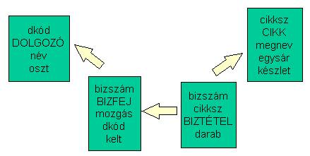
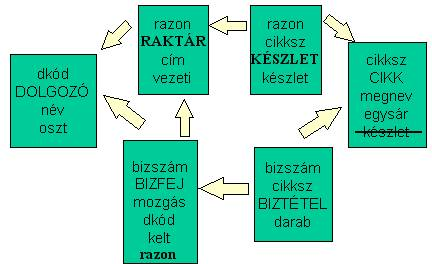
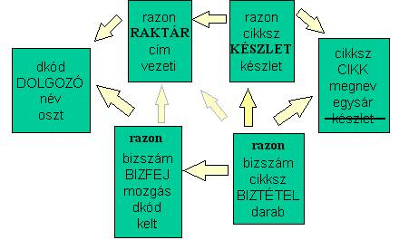

8.2. Raktár
Ismertetés
Egyetlen raktárból bizonylat kiállításával cikkeket vételezhetnek ki vagy adhatnak le valamely osztály dolgozói.
A régi adatbázis:

Az adatbázisban az osztályoknak nincs törzse, egy bizonylat egy dolgozóhoz kötődik, a bizonylat tételei mozgásnemükben egységesek, azaz vagy csupa kivét, vagy csupa bevét.
A régi adatbázist módosították a több raktár - benne mindenféle cikk - lehetőségével
Ez azt jelenti, hogy több raktár lett, melyek mindegyikében mindenféle cikk van, és innen lehet ezeket vételezni ill. leadni. Vegyük észre, hogy a cikktörzs közös, hiszen mindegyik raktárban ugyanaz az egyforma cikkek megnevezése, az aktuális (egységes) beszerzési ára, csak a készletek különbözők raktáronként. Minden raktárnaknak egy dolgozó lett a vezetője.
A bizonylatolás - mely szerint a kivét/bevét a raktár aktuális készletét csökkenti/növeli majd - kétféleképpen történhet.
Hasonlítsuk össze a 2 verziót!
A verzió:

B verzió:

Soroljuk fel mindkét verzióban a megszorításokat!